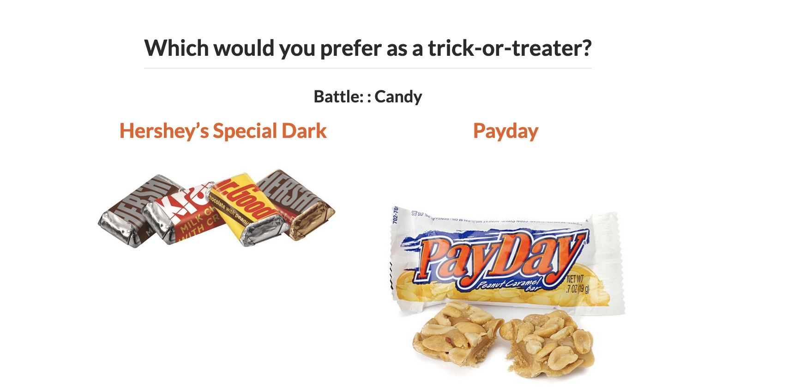

Linear Models I: Introduction
Megan Ayers
Stat 141 | Fall 2026
Monday, Week 4
Goals for Today
- Discuss the ideas of statistical modeling
- Learn two new summary statistics
- Introduce simple linear regression
Typical Analysis Goals
Descriptive: Want to estimate quantities (summary statistics) related to the population.
→ How many trees are in the Amazon?
Predictive: Want to predict the value of a variable.
→ Can I use remotely sensed data to predict forest types in the Amazon?
Causal: Want to determine if changes in a variable cause changes in another variable.
→ Do financial contracts prevent people from deforesting their land in the Amazon?
We will focus mainly on descriptive modeling in this course, and occasionally on predictive modeling (take Math 243: Statistical Learning to learn more). If you want to learn more about causality, take Math 394: Causal Inference.
Form of the Model
\[ y = f(x) + \epsilon \]
where \(\epsilon\) represents an error term.
Goal:
Determine a reasonable form for \(f()\). (Ex: Line, curve, …)
Estimate \(f()\) with \(\widehat{f}()\) using the data.
Generate predicted values: \(\widehat y = \widehat{f}(x)\).
Simple Linear Regression Model
Consider this model when:
Response variable \((y)\): quantitative
Explanatory variable \((x)\): quantitative
- Have only ONE explanatory variable.
AND, \(f()\) can be approximated by a line.
Example: The Ultimate Halloween Candy Power Ranking
“The social contract of Halloween is simple: Provide adequate treats to costumed masses, or be prepared for late-night tricks from those dissatisfied with your offer. To help you avoid that type of vengeance, and to help you make good decisions at the supermarket this weekend, we wanted to figure out what Halloween candy people most prefer. So we devised an experiment: Pit dozens of fun-sized candy varietals against one another, and let the wisdom of the crowd decide which one was best.” – Walt Hickey
“While we don’t know who exactly voted, we do know this: 8,371 different IP addresses voted on about 269,000 randomly generated matchups. So, not a scientific survey or anything, but a good sample of what candy people like.”
Example: The Ultimate Halloween Candy Power Ranking
Example: The Ultimate Halloween Candy Power Ranking
Rows: 85
Columns: 13
$ competitorname <chr> "100 Grand", "3 Musketeers", "One dime", "One quarter…
$ chocolate <dbl> 1, 1, 0, 0, 0, 1, 1, 0, 0, 0, 1, 0, 0, 0, 0, 0, 0, 0,…
$ fruity <dbl> 0, 0, 0, 0, 1, 0, 0, 0, 0, 1, 0, 1, 1, 1, 1, 1, 1, 1,…
$ caramel <dbl> 1, 0, 0, 0, 0, 0, 1, 0, 0, 1, 0, 0, 0, 0, 0, 0, 0, 0,…
$ peanutyalmondy <dbl> 0, 0, 0, 0, 0, 1, 1, 1, 0, 0, 0, 0, 0, 0, 0, 0, 0, 0,…
$ nougat <dbl> 0, 1, 0, 0, 0, 0, 1, 0, 0, 0, 1, 0, 0, 0, 0, 0, 0, 0,…
$ crispedricewafer <dbl> 1, 0, 0, 0, 0, 0, 0, 0, 0, 0, 0, 0, 0, 0, 0, 0, 0, 0,…
$ hard <dbl> 0, 0, 0, 0, 0, 0, 0, 0, 0, 0, 0, 0, 0, 0, 1, 0, 1, 1,…
$ bar <dbl> 1, 1, 0, 0, 0, 1, 1, 0, 0, 0, 1, 0, 0, 0, 0, 0, 0, 0,…
$ pluribus <dbl> 0, 0, 0, 0, 0, 0, 0, 1, 1, 0, 0, 1, 1, 1, 0, 1, 0, 1,…
$ sugarpercent <dbl> 73.2, 60.4, 1.1, 1.1, 90.6, 46.5, 60.4, 31.3, 90.6, 6…
$ pricepercent <dbl> 0.860, 0.511, 0.116, 0.511, 0.511, 0.767, 0.767, 0.51…
$ winpercent <dbl> 66.97173, 67.60294, 32.26109, 46.11650, 52.34146, 50.…Example: The Ultimate Halloween Candy Power Ranking
Linear trend?
Direction of trend?
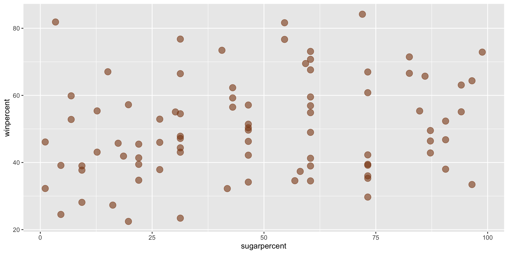
Example: The Ultimate Halloween Candy Power Ranking
- A simple linear regression model would be suitable for these data:
\[ y = \beta_0 + \beta_1 x + \epsilon \]
- \(\beta_0\) and \(\beta_1\) are fixed numbers
- \(\beta_0\) represents the intercept of a line
- \(\beta_1\) represents the slope of a line
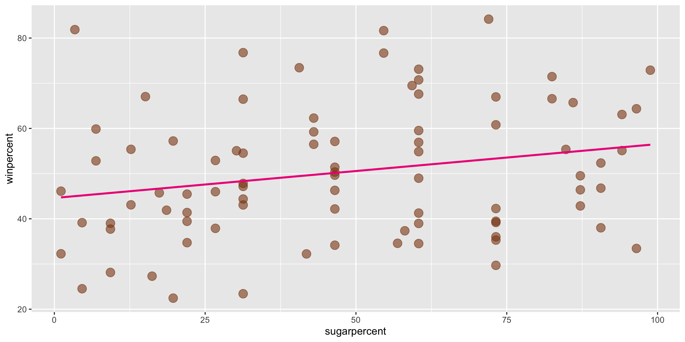
- Knowing \(\beta_0\) and \(\beta_1\) would help us summarize and describe the relationship between \(x\) and \(y\).
We want to find \(\beta_1\) (slope) and \(\beta_0\) (intercept) so that the line fits our data well
→ Need summary statistics that quantify the strength and relationship of the linear trend
→ These will help us find a value for slope and determine how well a line fits our data
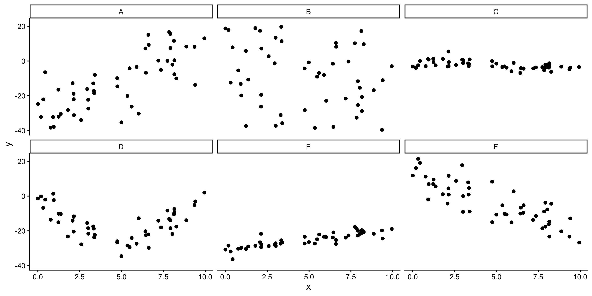
(Sample) Correlation Coefficient
Measures the strength and direction of linear relationship between two quantitative variables
Symbol: \(r\)
Always between -1 and 1
Sign indicates the direction of the relationship
Magnitude indicates the strength of the linear relationship
\(r\) is calculated using the sample means (\(\bar{x}\), \(\bar{y}\)) and standard deviations (\(s_x\), \(s_y\)) of the variables \(x\) and \(y\):
\[r = \frac{1}{s_x s_y} \cdot \frac{1}{n-1} \sum_{i =1}^n (x_i - \bar{x} ) (y_i - \bar{y} ) \]
Sidenote: (Sample) Covariance
Sample Correlation Coefficient: \[ r = \frac{1}{s_x s_y} \cdot \frac{1}{n-1} \sum_{i =1}^n (x_i - \bar{x} ) (y_i - \bar{y} ) \]
Sample Covariance:
\[ cov(x, y) = r \times s_x s_y = \frac{1}{n-1} \sum_{i =1}^n (x_i - \bar{x} ) (y_i - \bar{y} ) \]
The sample correlation coefficient is a standardized sample covariance, which is what causes it to only take values from -1 to 1. The sample covariance can take any real value.
Correlation, Covariance, and Slope
Q: Which will have the largest positive correlation?
Q: Which will have the largest negative correlation?
Q: Which will have correlation closest to 0?
A: 0.7568 B: -0.2172 C: -0.5373 D: -0.1133 E: 0.863 F: -0.8343 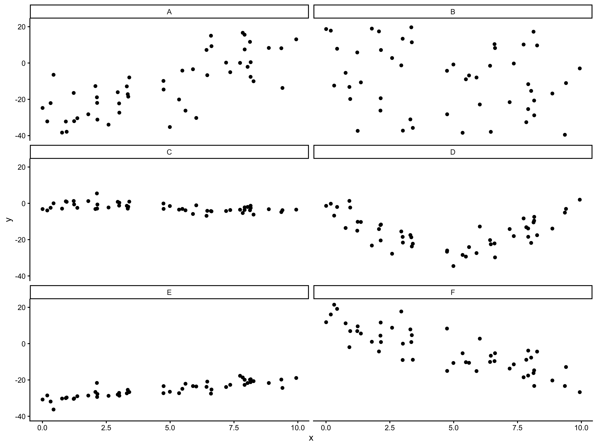
- Correlation: how strong is the linear relationship relative to noise
- Correlation and slope are related, but not the same (ex. A vs E)
New Example
# A tibble: 12 × 2
dataset cor
<chr> <dbl>
1 away -0.0641
2 bullseye -0.0686
3 circle -0.0683
4 dino -0.0645
5 dots -0.0603
6 h_lines -0.0617
7 high_lines -0.0685
8 slant_down -0.0690
9 star -0.0630
10 v_lines -0.0694
11 wide_lines -0.0666
12 x_shape -0.0656- Conclude that \(x\) and \(y\) have the same relationship across these different datasets because the correlation is the same?
Always graph the data when exploring relationships!
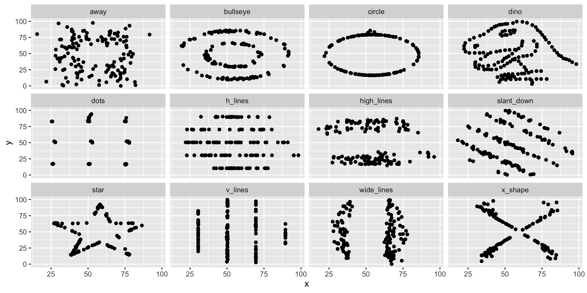
Returning to the Simple Linear Regression model…
Simple Linear Regression
Let’s return to the Candy Example.
A line is a reasonable model form.
Where should the line be?
- Slope? Intercept?
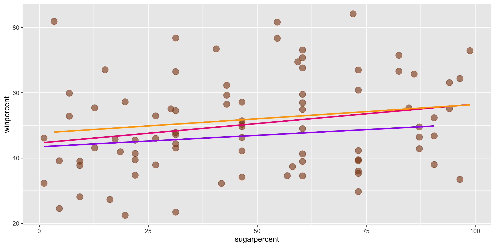
Form of the SLR Model
\[ \begin{align} y &= f(x) + \epsilon \\ y &= \beta_0 + \beta_1 x + \epsilon \end{align} \]
- We assume \(y\) is not perfectly predicted by \(f(x)\), with \(\epsilon\) representing random error.
- Need to determine the best estimates of \(\beta_0\) and \(\beta_1\).
Distinguishing between the population and the sample
\[ y = \beta_0 + \beta_1 x + \epsilon \]
- Parameters:
- Based on the population
- Unknown if we don’t have data on the whole population
- EX: \(\beta_0\) and \(\beta_1\)
\[ \widehat{y} = \widehat{\beta}_0 + \widehat{\beta}_1 x \]
- Statistics:
- Based on the sample data
- Known
- Usually estimate a population parameter
- EX: \(\widehat{\beta}_0\) and \(\widehat{\beta}_1\)
Method of Least Squares
Need two key definitions:
- Fitted value: The estimated value of the \(i\)-th case, given estimates \(\widehat{\beta}_0\) and \(\widehat{\beta}_1\)
\[ \widehat{y}_i = \widehat{\beta}_0 + \widehat{\beta}_1 x_i \]
- Residuals: The observed error term for the \(i\)-th case, given fitted values
\[ e_i = y_i - \widehat{y}_i \]
Goal: Pick values for \(\widehat{\beta}_0\) and \(\widehat{\beta}_1\) so that the residuals are small!
Method of Least Squares
Want residuals to be small.
Minimize a function of the residuals.
Minimize:
\[ \sum_{i = 1}^n e^2_i \]
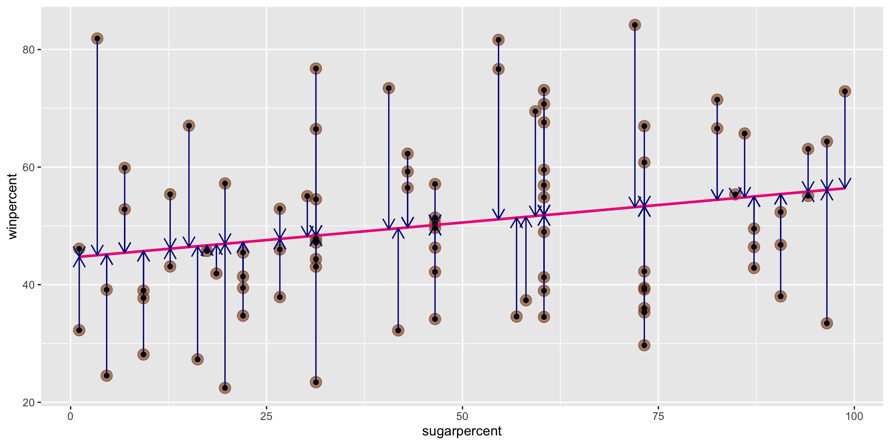
Sidenote:
- We could use \(\sum_{i = 1}^n |e_i|\)
- But, this is less common, less computationally efficient, and lacks theoretical advantages
- \(\sum_{i = 1}^n e_i^2\) appropriately weights one large residual as “worse” than many small ones
Method of Least Squares
Suppose \(n\) observations of \(x\) and \(y\) are collected: \((x_1, y_1), \ldots, (x_n, y_n)\).
It turns out there are specific values of \(\widehat{\beta}_0\) and \(\widehat{\beta}_1\) that minimize the sum of squared residuals, given this data:
\[ \begin{align} \widehat{\beta}_1 &= \frac{ \sum_{i = 1}^n (x_i - \bar{x}) (y_i - \bar{y})}{ \sum_{i = 1}^n (x_i - \bar{x})^2} \\ \widehat{\beta}_o &= \bar{y} - \widehat{\beta}_1 \bar{x} \end{align} \] where
\[ \begin{align} \bar{y} = \frac{1}{n} \sum_{i = 1}^n y_i \quad \mbox{and} \quad \bar{x} = \frac{1}{n} \sum_{i = 1}^n x_i \end{align} \]
Method of Least Squares
Suppose \(n\) observations of \(x\) and \(y\) are collected: \((x_1, y_1), \ldots, (x_n, y_n)\).
It turns out there are specific values of \(\widehat{\beta}_0\) and \(\widehat{\beta}_1\) that minimize the sum of squared residuals, given this data:
\[ \begin{align} \widehat{\beta}_1 &= \frac{ \sum_{i = 1}^n (x_i - \bar{x}) (y_i - \bar{y})}{ \sum_{i = 1}^n (x_i - \bar{x})^2} = \frac{s_y}{s_x}r \\ \widehat{\beta}_o &= \bar{y} - \widehat{\beta}_1 \bar{x} \end{align} \] where
\[ \begin{align} \bar{y} = \frac{1}{n} \sum_{i = 1}^n y_i \quad \mbox{and} \quad \bar{x} = \frac{1}{n} \sum_{i = 1}^n x_i \end{align} \]
Method of Least Squares
Once we know \(\widehat{\beta}_0\) and \(\widehat{\beta}_1\), we can estimate the whole function with:
\[ \widehat{y} = \widehat{\beta}_0 + \widehat{\beta}_1 x \]
Called the least squares line, regression line, or the line of best fit.
We need to be precise and careful when interpreting \(\beta_0\) and \(\beta_1\) (and their estimates)
- Intercept: We [expect/predict] \(y\) to be \(\beta_0\) on average when \(x = 0\).
- Slope: For a one-unit increase in \(x\), we [expect/predict] \(y\) to change by \(\beta_1\) units on average.
Unless experimental data is involved, avoid causal language.
- Example of causal language: “When \(x\) increases by 1 unit, \(y\) will increase by \(\beta_1\)”
Method of Least Squares
ggplot2 will compute the line and add it to your plot using geom_smooth(method = "lm")
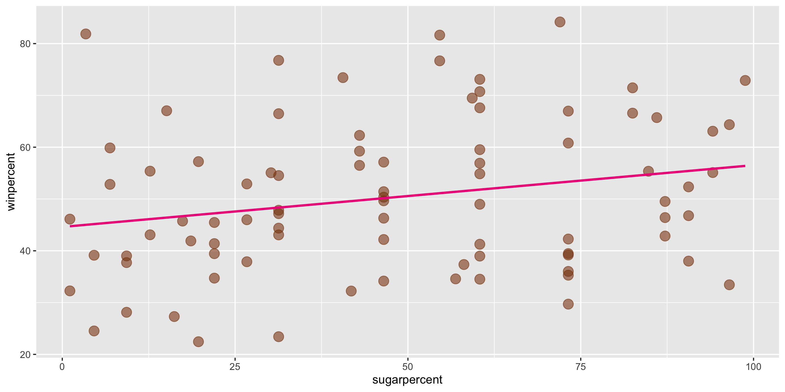
We can calculate the exact values of \(\widehat{\beta}_0\) and \(\widehat{\beta}_1\) using our formulas, by hand or in R
Method of Least Squares
\[ \widehat{y} = \widehat{\beta}_0 + \widehat{\beta}_1 x \] In this case, \(\widehat{\beta}_0 = 44.6094\) and \(\widehat{\beta}_1 = 0.1192\).

Method of Least Squares
\[ \widehat{y} = \widehat{\beta}_0 + \widehat{\beta}_1 x \] In this case, \(\widehat{\beta}_0 = 44.6094\) and \(\widehat{\beta}_1 = 0.1192\).
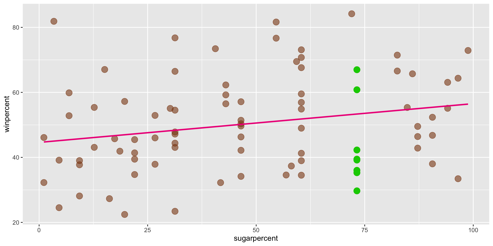
- Q: Suppose a new candy bar has
sugarpercent = 73. What does the model predict forwinpercent?
Method of Least Squares
\[ \widehat{y} = \widehat{\beta}_0 + \widehat{\beta}_1 x \] In this case, \(\widehat{\beta}_0 = 44.6094\) and \(\widehat{\beta}_1 = 0.1192\).
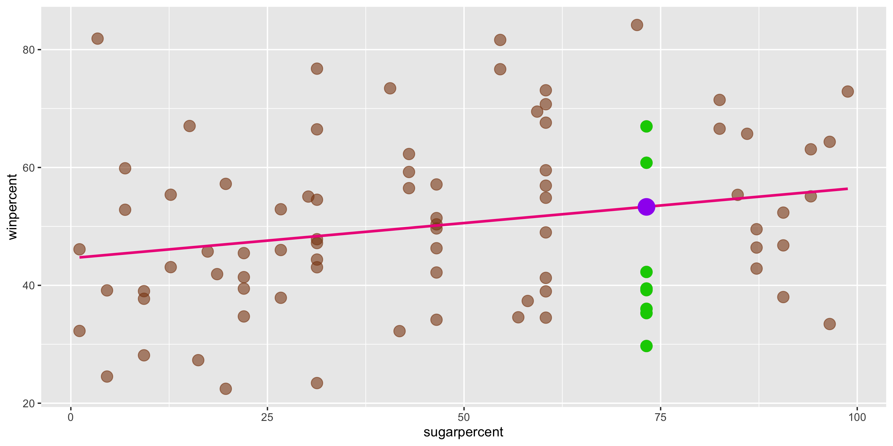
- Q: Suppose a new candy bar has
sugarpercent = 73. What does the model predict forwinpercent? - A: \(\widehat{y} = 44.6094 + 0.1192 \cdot 73\) = 53.311
- This is different from the actual
winpercents we see for candies withsugarpercent = 73. - This isn’t unexpected: the line predicts the average \(y\) for each value of \(x\).
Residual plot preview
We can visualize the accuracy of a linear model using residual plots:
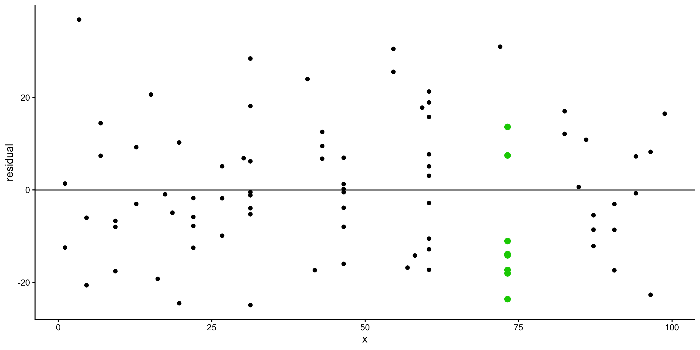
- We’ll learn to use different residual plots to more formally assess linear model assumptions
Activity: Extra practice interpreting coefficients
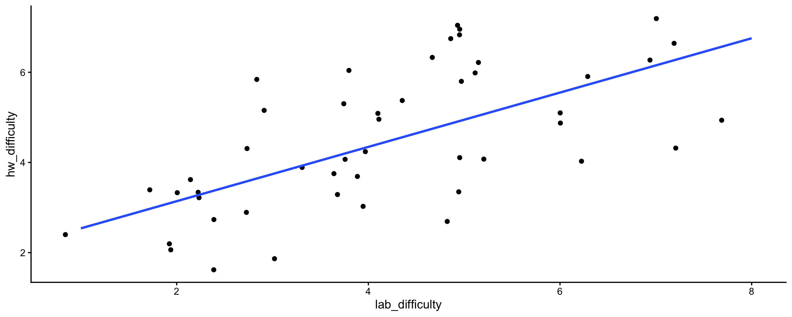
- Q1: How should we interpret the intercept?
- Q2: How should we interpret the coefficient on
lab_difficulty?
Next time: more simple linear regression
- We’ll use
Rto compute the least squares line and the values of \(\widehat{\beta}_0\) and \(\widehat{\beta}_1\). - We’ll introduce the formal assumptions we must make when doing linear regression, and diagnostic plots to check these assumptions.